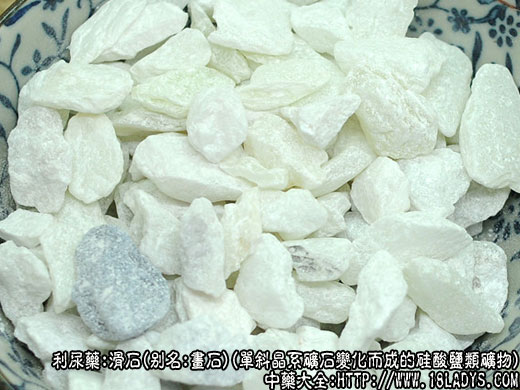

本品为常用中药，《神农本草经》列为上品。
别名：画石、液石、脱石、冷石、番石、共石。
来源：为单斜晶系矿石。系由辉石，透角闪石及叶状蛇纹石等变化而成的天然矿石中硅酸盐类矿物的滑石。
产地：主产于山东，江西，山西，江苏，陕西，辽宁等地。
性状鉴别：呈不规则块状，大小不一。全体青白色、黄白色，半透明或不透明。手摸之有油脂样滑腻感。质较软而坚实，用指甲可刮下白粉；体较重而易砸碎。气无，味无而有微凉感。耐热（加热1300～1400℃亦不熔）。
以色青白，滑润油腻，整洁，无杂石者为佳。
主要成分：为含水硅酸镁，而含粘土、石灰等。
药理作用：利尿渗湿、清热，作用较和缓；所含的硅酸镁有吸附和收敛作用，能保护肠管，止泻而不引起鼓肠，对治疗水泻尤为适宜。又体外试验其煎剂对伤寒杆菌、脑膜炎球菌和金黄色葡萄菌有抑制作用。
炮制：轧成粉末生用。
性味：甘寒。
归经：入胃，膀胱经。
功能：利水通淋，清解暑热。
主治：种热燥渴，中暑吐泻，淋病水肿，吐衄血等症。
临床应用：为去湿清热常用药，凡小便不利而属于热证者，常用滑石。
1、用于治疗热淋（例如急性尿道炎、膀胱炎等）、石淋（泌尿系结石）。取其有利尿清热作用，在治疗泌尿系结石和急性尿路感染的方剂中，滑石广泛应用。
2、用于治疗暑热。夏季受暑，发高热，小便不畅，烦躁口渴，或有水泻，可用滑石配甘草，方如六一散，再加辰砂，即为益元散，对治疗小儿夏季感冒腹泻，效果更好。
3、作为辅助药，用于温热病热在气分而夹湿者（感染性疾病中期和极期，持续发热、身重、口渴、舌苔黄），配合其他清利湿药，使湿热随小便解除，放入黄芩滑石汤。此外，在温热病恢复期，津少阴亏，余热未退尽，也可在滋阴药中稍加滑石，促使余热随小便解除。
用量：内服10～15g，治疗泌尿系结石可重用至24～30g。外用适量。
处方举例：1、六一散《伤寒标本》：（成药、生滑石末六份，甘草末一份），成分服6～9g（小儿量为2.4g～3g），每日2～3次，冷开水或温开水送服，用其它汤药送服。如与其他药同煎，则需要9～15g（大剂可达24g）包煎。
2、益元散。六一散18g，辰砂1.5g，分2～3次温开水送服。用于中暑腹泻者，以藿香或香薷9g，轻煎送服更好。如与其它药同煎，益元散可用至9～15g。
3、黄芩滑石汤《温病条辨》：黄芩9g、滑石9g、通草3g、茯苓15g、猪苓9g、大腹皮9g、白蔻仁3g，水煎服。
注：全国大部分地区习用硬滑石。华东、四川、湖北、贵州等地习用软滑石。
软滑石是矿物中高岭石的一种，属单斜晶系，由辉石、白云石、云母石等含镁之矿石受水及硅酸作用后变化而成。多产于变质岩，石灰石及白云岩中。主产于四川、湖北、贵州等地。呈棱块状颗粒状，大小不一。全体呈白色或夹杂有浅红色，灰色。表面无光泽或稍有光泽，手摸之有滑腻感。体较轻，质松软，用手即可粉碎成白色粉末。微有泥土样气，味无，舔之粘舌。不溶于水、盐酸或硝酸，在硫酸中加热后，变成灰色。我们认为软滑石应为药用石脂的一种与滑石功效不同，不宜做滑石使用。